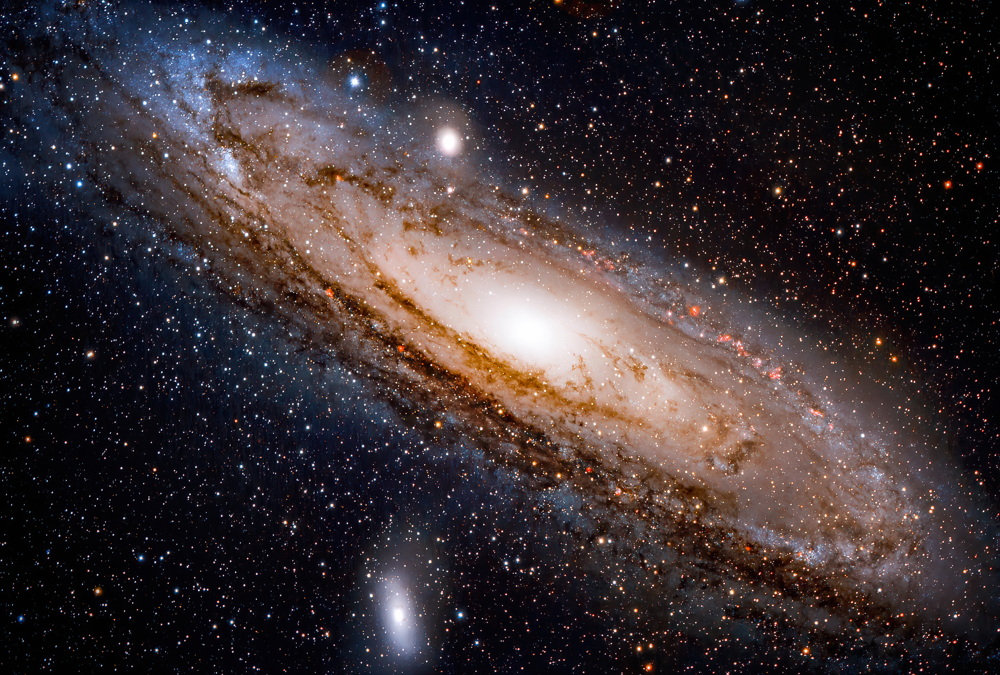
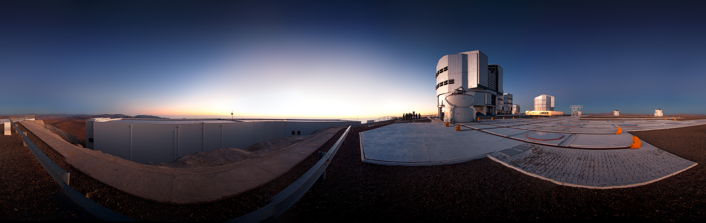
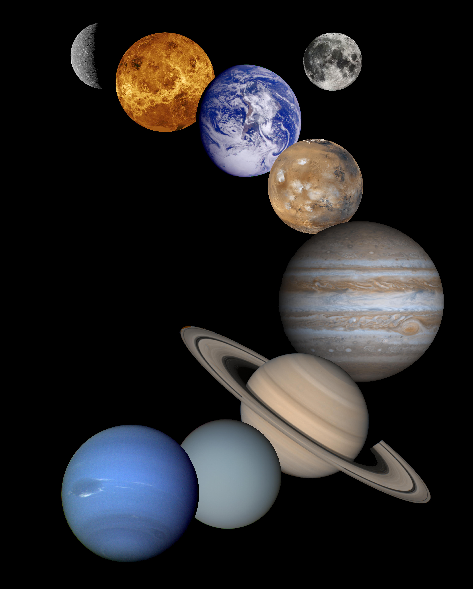

Galáxias
Grandes conjuntos formados por estrelas, planetas, poeira espacial e outros corpos celestes.
Ver imagens
Conheça planetas, estrelas, galáxias e fenômenos espaciais.
Explorar galeria
Descubra como os telescópios revelam mundos distantes.

Conheça os planetas que fazem parte da nossa vizinhança espacial.
Conhecimento além da Terra
O Observatório Aurora é um portal criado para compartilhar curiosidades, imagens e descobertas relacionadas à astronomia. Nosso objetivo é apresentar o Universo de maneira simples, visual e interessante.
Aqui você poderá conhecer alguns dos principais objetos celestes, acompanhar novidades da exploração espacial e descobrir fenômenos que acontecem muito além do nosso planeta.

Destaques espaciais
Conheça alguns dos assuntos apresentados em nosso observatório.

Grandes conjuntos formados por estrelas, planetas, poeira espacial e outros corpos celestes.
Ver imagens
Mundos diferentes que orbitam estrelas e apresentam características únicas.
Conhecer planetas
Visite nossa galeria ou entre em contato para saber mais sobre o Observatório Aurora.